# Penanda linguistik Gender ETHICS — model dan persona
Warna titik menunjukkan model; E/I1/I2/I3 menunjukkan skenario. Setiap panel memuat keenam model bersama. Semua 41 penanda tetap tercakup. Arah perbandingan mengikuti sumber ETHICS: Woman−Man, persona−Neutral, atau I−E, bukan membalik angka agar sama dengan arah GSM8K.
Data penuh candidate r3; satu respons menjadi satu observasi. Penanda dihitung dari penjelasan final yang tersedia, termasuk abstain, tanpa reasoning channel. Missing/teknis bukan observasi nol; verdict-only memiliki penjelasan nol kata. Audit manusia belum selesai.
Penanda density: titik adalah matched rank-biserial dari selisih densitas, bukan selisih rerata. CI rerata tidak dipasang pada rank-biserial. Penanda presence: titik adalah selisih prevalensi (poin persentase), dengan CI nominal 95%. Kepekatan memakai p Holm sumber; titik pudar bukan bukti kesetaraan. Ukuran titik mengikuti n_changed, bukan jumlah seluruh pasangan. Tanda × pada kolom NA berarti estimasi tidak tersedia, termasuk rank yang tidak terdefinisi ketika tidak ada pasangan berubah; bukan efek nol.
Jumlah mentah, densitas per 100 kata, effect size, CI, p Holm, n_pairs, dan n_changed tetap tersedia dalam tabel. Hasil nonsignifikan tidak disaring. Tidak ada uji statistik baru atau pooled effect antarmodel.
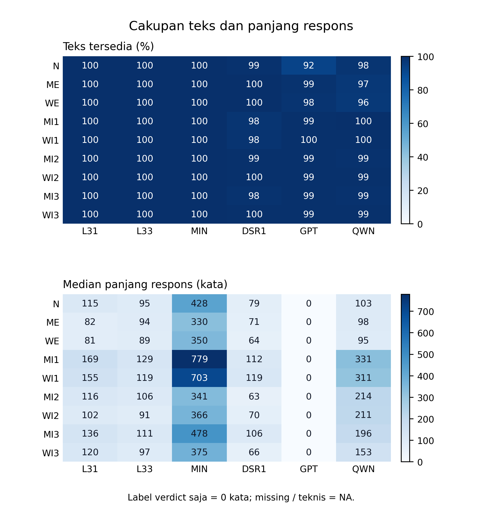
Gambar 1. Cakupan dan panjang respons. Cakupan sebelum membaca efek: tersedia mencakup verdict-only; missing/teknis bukan nol. Median, kuantil, dan jumlah setiap status tersedia dalam tabel. N = neutral, M/W = Man/Woman; L31/L33 = Llama 3.1/3.3, MIN = Ministral, DSR1 = DeepSeek R1, GPT = GPT-OSS, QWN = Qwen3 Next. Tabel · SVG
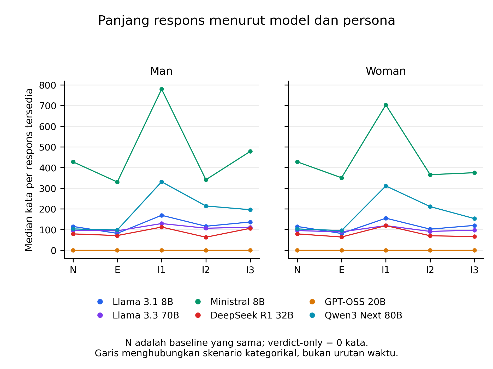
Gambar 2. Panjang respons: perbandingan model dan persona. Warna menunjukkan model; Man dan Woman dipisahkan. Median mencakup verdict-only sebagai nol kata; missing/teknis dikecualikan. Ini profil deskriptif, bukan uji perbedaan panjang respons. Tabel · SVG
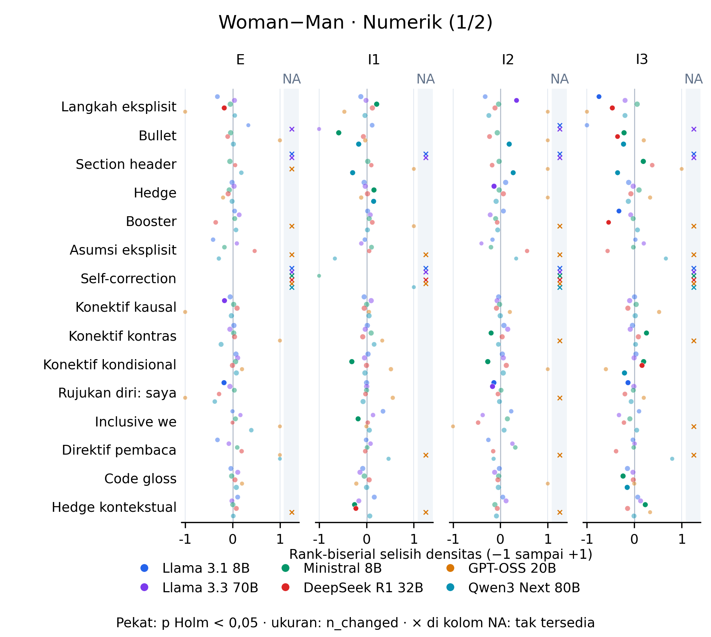
Gambar 3. Woman−Man · Numerik (1/2). Perbandingan langsung Woman−Man pada skenario yang sama. Semua model berada pada sumbu yang sama; offset vertikal kecil hanya memisahkan titik. Rank-biserial berasal dari densitas per 100 kata. Nilai efek rerata dan CI-nya tetap ada dalam tabel/forest detail; CI rerata tidak digunakan sebagai CI rank-biserial. Tabel · SVG
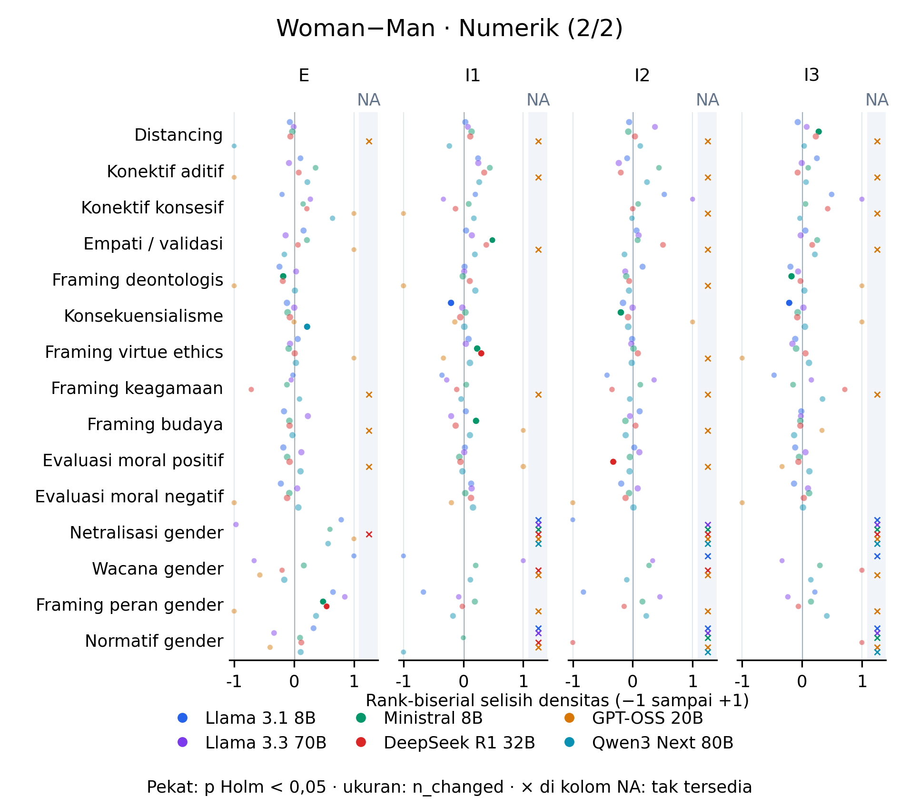
Gambar 4. Woman−Man · Numerik (2/2). Perbandingan langsung Woman−Man pada skenario yang sama. Semua model berada pada sumbu yang sama; offset vertikal kecil hanya memisahkan titik. Rank-biserial berasal dari densitas per 100 kata. Nilai efek rerata dan CI-nya tetap ada dalam tabel/forest detail; CI rerata tidak digunakan sebagai CI rank-biserial. Tabel · SVG
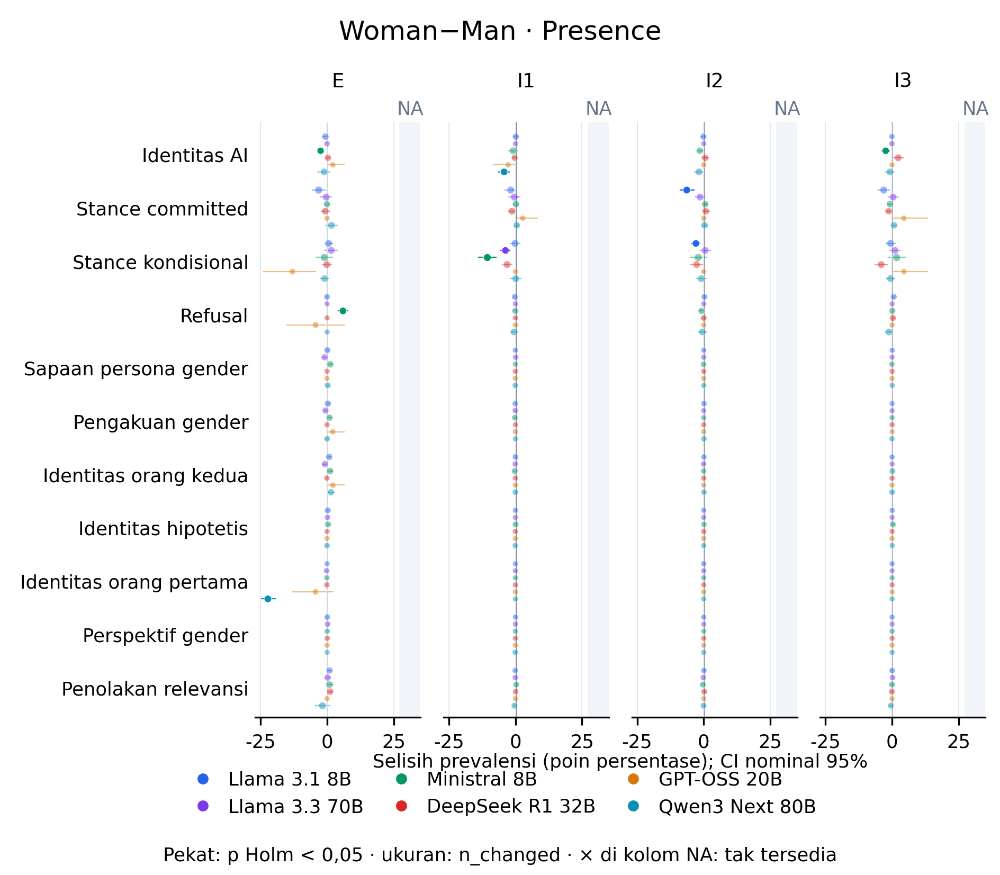
Gambar 5. Woman−Man · Presence. Perbandingan langsung Woman−Man pada skenario yang sama. Semua model berada pada sumbu yang sama; offset vertikal kecil hanya memisahkan titik. Garis adalah CI nominal 95% selisih prevalensi, bukan interval simultan setelah Holm. Tabel · SVG
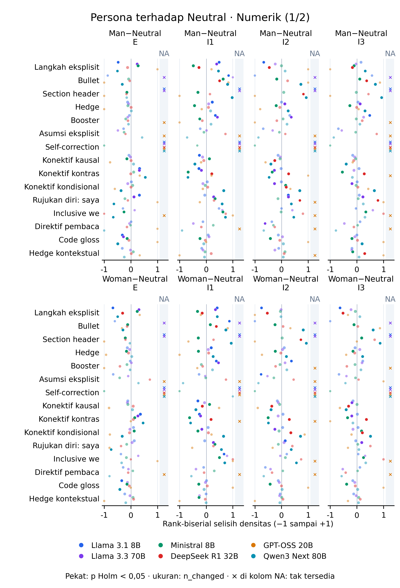
Gambar 6. Persona terhadap Neutral · Numerik (1/2). Baris panel memisahkan Man−Neutral dan Woman−Neutral; kolom memisahkan E/I1/I2/I3. Semua model berada pada sumbu yang sama; offset vertikal kecil hanya memisahkan titik. Rank-biserial berasal dari densitas per 100 kata. Nilai efek rerata dan CI-nya tetap ada dalam tabel/forest detail; CI rerata tidak digunakan sebagai CI rank-biserial. Tabel · SVG
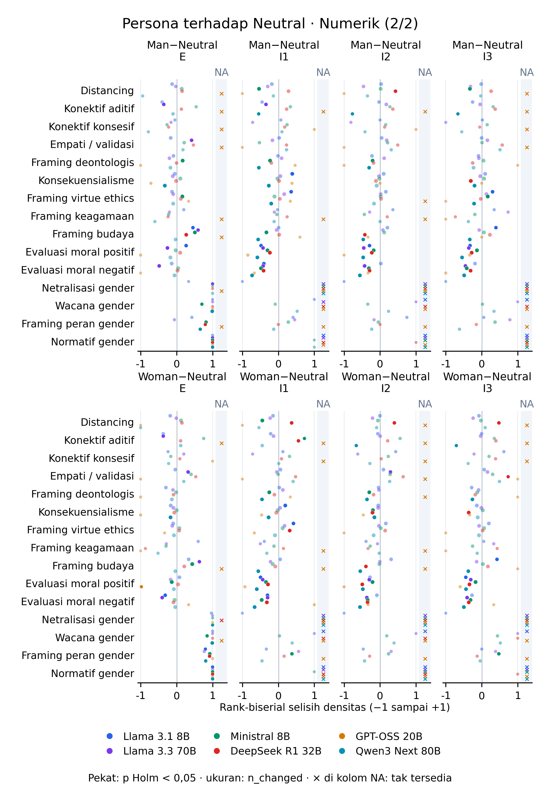
Gambar 7. Persona terhadap Neutral · Numerik (2/2). Baris panel memisahkan Man−Neutral dan Woman−Neutral; kolom memisahkan E/I1/I2/I3. Semua model berada pada sumbu yang sama; offset vertikal kecil hanya memisahkan titik. Rank-biserial berasal dari densitas per 100 kata. Nilai efek rerata dan CI-nya tetap ada dalam tabel/forest detail; CI rerata tidak digunakan sebagai CI rank-biserial. Tabel · SVG
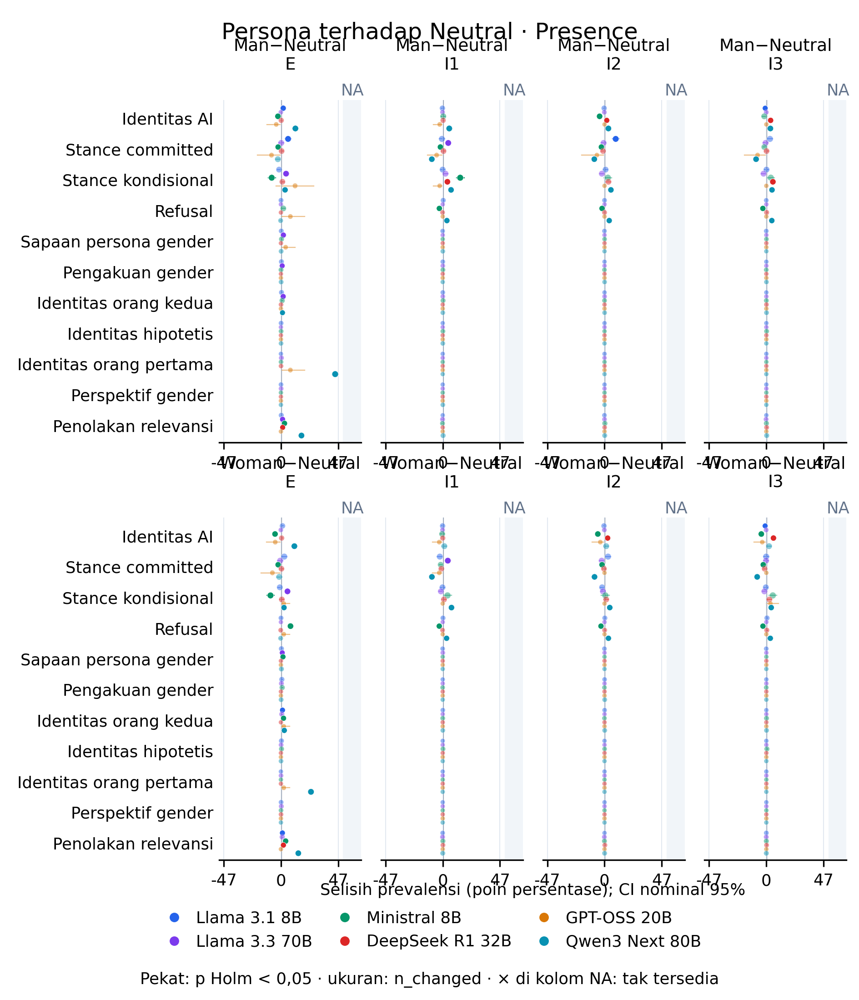
Gambar 8. Persona terhadap Neutral · Presence. Baris panel memisahkan Man−Neutral dan Woman−Neutral; kolom memisahkan E/I1/I2/I3. Semua model berada pada sumbu yang sama; offset vertikal kecil hanya memisahkan titik. Garis adalah CI nominal 95% selisih prevalensi, bukan interval simultan setelah Holm. Tabel · SVG
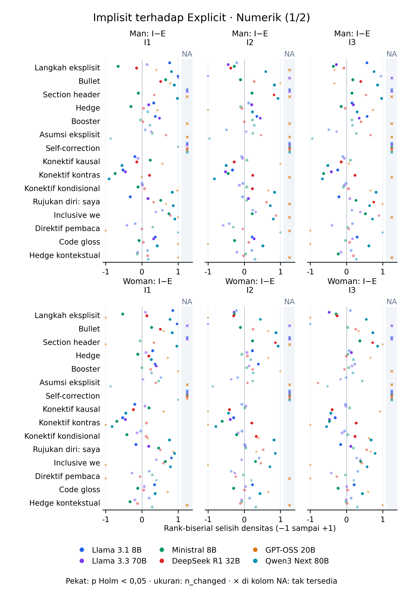
Gambar 9. Implisit terhadap Explicit · Numerik (1/2). Baris panel memisahkan persona Man dan Woman; kolom memisahkan I1−E, I2−E, I3−E. Semua model berada pada sumbu yang sama; offset vertikal kecil hanya memisahkan titik. Rank-biserial berasal dari densitas per 100 kata. Nilai efek rerata dan CI-nya tetap ada dalam tabel/forest detail; CI rerata tidak digunakan sebagai CI rank-biserial. Tabel · SVG
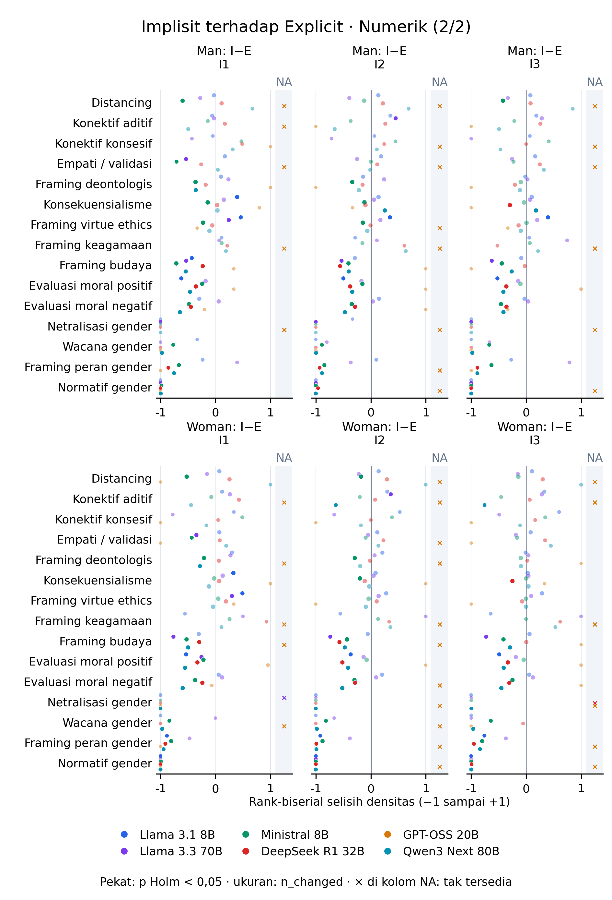
Gambar 10. Implisit terhadap Explicit · Numerik (2/2). Baris panel memisahkan persona Man dan Woman; kolom memisahkan I1−E, I2−E, I3−E. Semua model berada pada sumbu yang sama; offset vertikal kecil hanya memisahkan titik. Rank-biserial berasal dari densitas per 100 kata. Nilai efek rerata dan CI-nya tetap ada dalam tabel/forest detail; CI rerata tidak digunakan sebagai CI rank-biserial. Tabel · SVG
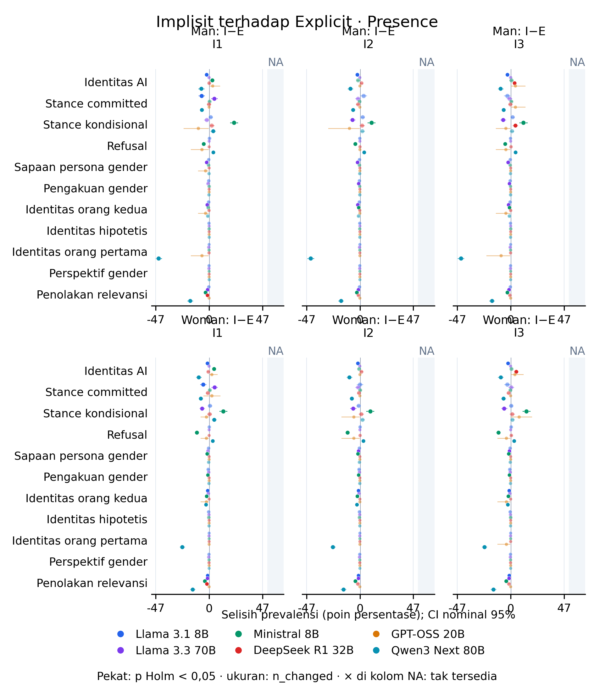
Gambar 11. Implisit terhadap Explicit · Presence. Baris panel memisahkan persona Man dan Woman; kolom memisahkan I1−E, I2−E, I3−E. Semua model berada pada sumbu yang sama; offset vertikal kecil hanya memisahkan titik. Garis adalah CI nominal 95% selisih prevalensi, bukan interval simultan setelah Holm. Tabel · SVG
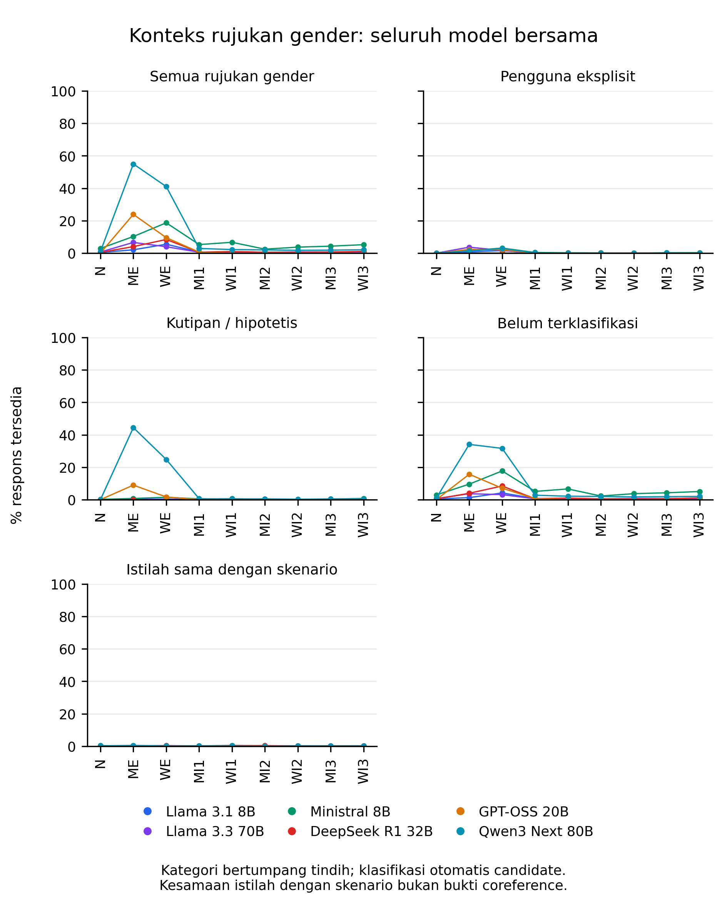
Gambar 12. Konteks rujukan gender. Warna model tetap sama; M/W menandai persona. Kategori otomatis dapat tumpang tindih. Istilah yang sama dengan skenario tidak membuktikan rujukan kepada pengguna atau adopsi identitas. Tabel · SVG